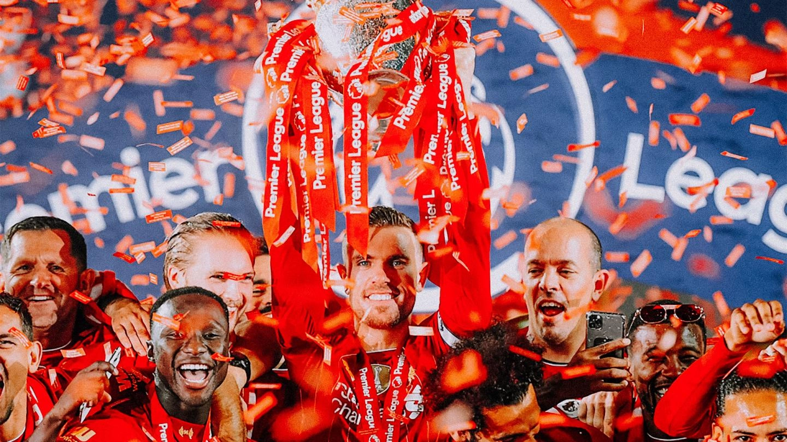

Trophies

League Titles (19)
1900-01, 1905-06, 1921-22, 1922-23, 1946-47, 1963-64, 1965-66,
1972-73, 1975-76, 1976-77, 1978-79, 1979-80, 1981-82, 1982-83, 1983-84, 1985-86, 1987-88, 1989-90, 2019-20
Liverpool have won a phenomenal 19 top-flight league titles, with Jürgen Klopp leading the Reds to their most recent in the Premier League in 2019-20.

European Cups (6)
1976-77, 1977-78, 1980-81, 1983-84, 2004-05, 2018-19
We have proudly won six European Cups - more than any other British team. The first came under Bob Paisley, who added two more to the trophy cabinet before his successor Joe Fagan also won the famous cup. Rafael Benitez oversaw the Miracle of Istanbul in 2005, and the most recent came under Jürgen Klopp in 2019.

FIFA Club World Cup (1)
2019
Liverpool broke new ground in December 2019 by lifting the Club World Cup for the first time in Reds history. Jürgen Klopp's European Cup winners defeated Monterrey and Flamengo to become world champions.

Fa cup (8)
1964-65, 1973-74, 1985-86, 1988-89, 1991-92, 2000-01, 2005-06, 2021-22
Liverpool have eight FA Cups to their name. The first triumph came under Bill Shankly in 1965 when Leeds United were defeated 2-1 at Wembley.
Leauge cups (9)
1980-81, 1981-82, 1982-83, 1983-84, 1994-95, 2000-01, 2002-03, 2011-12, 2021-22
Liverpool boast a record tally of nine League Cups. The trophy was last brought home to Anfield in 2022 courtesy of a penalty shootout victory over Chelsea at Wembley.

UEFA Cups (3)
1972-73, 1975-76, 2000-01
We have won the UEFA Cup on three occasions. Bill Shankly, Bob Paisley and Gerard Houllier all led their teams to the trophy, the latter thanks to a 5-4 win over Alaves in one of the most incredible European finals of all time.

UEFA Super Cups(4)
1977, 2001, 2005, 2019
Three of Liverpool's European Cup victories and one UEFA Cup win have been followed up with success in the season-opening Super Cup.

Charity/Community Shields(16)
1964*, 1965*, 1966, 1974, 1976, 1977*, 1979, 1980, 1982, 1986*, 1988, 1989, 1990*, 2001, 2006, 2022
The Reds have got their hands on 16 Charity/Community Shields over the years, either winning the trophy outright or, as used to be the case, sharing it with another team following a draw.
Reserve Division One(18)
1956-57, 1968-69, 1969-70, 1970-71, 1972-73, 1973-74, 1974-75, 1975-76, 1976-77, 1978-79, 1979-80, 1980-81, 1981-82, 1983-84, 1984-85, 1989-90, 1999-2000, 2007-08
Lancashire League(1)
1892-93
Division Two (4)
1893-94, 1895-96, 1904-05, 1961-62
Football Leauge Super Cup(1)
1986